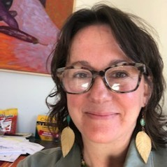

A map of where my interests and expertise lie—and where our work might intersect.
Founder & CEO, Kincraft
I'm a systems thinker who has spent 25+ years studying how humans organize—in workplaces, during crises, across borders, and for social change. That work took me through government, higher education, nonprofits, and now tech. Each domain added layers of understanding that now inform what I'm building.
Areas where I have depth—and where Kincraft draws from
How organizations communicate internally and externally. How they change, adapt, and fail to adapt. The gap between what institutions say and what they do. Academic path: BA in Journalism, MA in Human Communication, PhD in Organizational Communication.
Building a Public Benefit Corporation (PBC) where mission is legally locked to amplify cultural preservation and climate initiatives.
If you study organizational change, mission-driven structures, strategic communication, or benefit corporations, let's connect.
Transnational feminist networks and how movements scale across borders. Consulted with World Pulse (190+ countries) to architect their theory of change and impact framework. Published research on postcolonial reflexivity in organizational practice.
Kincraft connects makers globally to heritage traditions across borders. The Cultural Regeneration Fund supports artisan communities worldwide.
If you work on global movements, transnational networks, or international development with a gender lens, let's connect.
How communities respond to systemic stress—wildfires, pandemics, health system failures. What makes some communities bounce back while others don't. Artisan communities preserve land-based knowledge essential for climate adaptation.
Artisan communities are on the front lines of climate change. Kincraft's Cultural Regeneration Fund prioritizes their resilience, land stewardship, and climate adaptation.
If you work on community resilience, climate adaptation, land stewardship, or disaster recovery, I'd like to learn from you.
What makes the nonprofit sector sustainable—or fragile. Volunteerism, managed care impacts, and how mission-driven organizations maintain health over time.
Kincraft partners with cultural nonprofits and artisan collectives. Understanding sector health shapes how we structure those relationships.
If you research or lead mission-driven organizations, let's compare notes.
Signals analysis, scenario planning, and how to make decisions for conditions that don't yet exist. Trained through Stanford and the Institute for the Future (IFTF).
We're bringing futures thinking tools and forecasting tools to makers and designers.
If you're building foresight tools or teaching futures methods, I'm interested.
Stanford d.school methodology. UX/UI principles. Participatory research that centers the people being designed for, not just the designers.
Every Kincraft feature starts with maker needs. Pattern Passport emerged from asking: what do makers actually want to know about heritage?
If you practice design thinking or UX research, especially in social impact, let's talk.
What it means to live a civically engaged life. How to build systems that create engaged citizens at scale—not just inform them, but activate them.
Kincraft's mission test: "Does this make makers more capable of affecting the change they want to see?"
If you build civic infrastructure or study political participation, I want to learn from your work.
Indigenous protocols. Postcolonial reflexivity. The difference between appreciation and appropriation. How to represent cultural knowledge with consent and respect. Artisan craft traditions are tied to the land—natural intelligence passed down through generations.
We are building Kincraft to provide cultural attribution, land acknowledgment, and climate data for land stewardship for every design—connecting makers to artisan communities and heritage traditions as well as climate data and initiatives near them.
If you work on cultural preservation, indigenous rights, land stewardship, or ethical representation, this is core to what we're building.
Online interviewing methodology. Reflexivity in research. How to give voice to people typically excluded from research processes. Consulted with World Pulse (190+ countries) on transnational feminist network impact frameworks.
User research for Kincraft follows these principles—centering maker voices, not just our assumptions about what makers need.
If you develop research methods, study voice/representation in research, or work with transnational feminist networks, let's exchange ideas.
AI ethics and safety. Women's barriers in tech. How technology reshapes work, identity, and power. The difference between tech that extracts and tech that regenerates. Gold standards for child safety baked in before the build begins.
Kincraft is explicitly non-extractive—we don't optimize for engagement, we don't use dark patterns, we measure offline connection.
If you work on ethical tech, responsible AI, or tech policy, I'd value your perspective.
How business incubators work. Knowledge work and creativity. What environments foster innovation—and what kills it.
We are building infrastructure for a maker ecosystem—not just an app, but tools, education, and community that reinforce each other.
If you study or build innovation infrastructure, especially outside traditional tech hubs, let's connect.
How to center excluded voices in policy processes. Research design that surfaces what decision-makers miss. Presenting findings to power.
EdTech partnerships will bring Kincraft into schools—navigating education policy and curriculum standards while building to the gold standard for child safety, security, and offline motivation.
If you work on education policy or inclusive policy design, we may have synergies.
How parenting, education, and technology shape each generation's approach to dissent, leadership, and change. What motivates Gen Z differently.
Kincraft is built for Gen Z makers who want meaning beyond consumption—tools to create the world they want to live in.
If you study generational change or build for younger audiences with depth, let's compare approaches.
Where It All Converges
A platform of craft heritage-inspired digital tools that solve real problems makers face. From pattern creation to futures thinking, Kincraft is a movement to build capacity and community for makers everywhere.
Mission-locked Public Benefit Corporation amplifying endangered artisan collectives and climate initiatives that serve maker communities.
As a sixth-generation Californian, I build with the Indigenous seventh-generation principle in mind: decisions made for those who come after.
Crafting the future. One maker at a time.
If any of these domains intersect with your work—as an investor, researcher, partner, or builder—I'd welcome a conversation.
Connect on LinkedIn